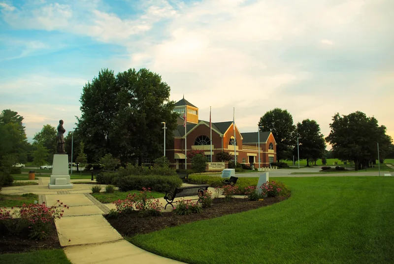

Pick your shingle color standing at the end of your own driveway, with two or three samples held against your brick or siding, at two different times of day. Everything below is about narrowing the list before you get to that point.
Start with what's staying
Walk out to the curb and look at your house the way a stranger would. Note the colors you can't change cheaply: the brick, the stone, the front door, the gutters if they're staying.
Brick carries an undertone. Hold a white sheet of paper next to it and you'll see it lean red, orange, pink or brown. Stone usually mixes gray and tan with a little rust. Even white siding leans warm or cool once it sits next to something truly white.
Your shingle should share an undertone with at least one of those fixed colors. A warm brown roof over cool gray stone tends to look like two different houses stacked on top of each other. A charcoal with a little brown in it, over that same stone, pulls the whole front together.

Solid or blended?
Most architectural shingle lines offer some colors that mix several shades of granules and a few that read close to a single color from the street. A rule of thumb that holds up on most houses: the busier the walls, the calmer the roof.
Multi-tone brick or a stacked-stone front already gives the eye plenty to look at, so a roof that reads as one quiet color lets the walls do the talking. Plain painted siding or single-color vinyl can carry a roof with more variation in it.
Four common East Tennessee houses
The brick ranch
A long, low roof is a lot of shingle compared with the wall under it, so on a ranch the roof color carries more weight than it does on a two-story. Over red or orange brick, warm browns and weathered-wood tones look settled. Over darker brick with a purple cast, a charcoal or a gray-black blend keeps the house from going muddy.
Our opinion: on a red brick ranch, skip the pure black. It tends to make the roof look heavier than the house it sits on.
The craftsman
Craftsman houses usually have a lot going on already, with tapered porch columns and sometimes two siding colors. Earthy roof colors suit them, like a brown with some green in it or a deep driftwood. Pull the roof color from the darkest color already on the house, often the shake in the gables or the porch posts, and the front hangs together.
The white farmhouse
White siding with black window frames has been a popular look for a while, and a near-black or dark charcoal shingle fits it. If your white leans creamy instead of bright, a dark brown or a charcoal with brown flecks can be kinder to it than a cold black. If the porch roof is metal, let the main roof sit in the same tone as the metal.
The stone front
A stone front is the hardest to match, because one wall can hold five colors. Stand thirty feet back and pick the color you notice most, not the one you see up close. Many stone blends read gray-tan from the street, and a weathered gray or a brown-gray mix usually sits well with them. Keep the shingle a step darker than the darkest common stone so the roof frames the wall instead of fighting it.

Check what your neighborhood allows
If your street has an HOA, read its exterior rules before you fall for a color. Some keep a short list of allowed shingle colors, and some want a sample submitted for review before work starts. If you live in a Farragut subdivision, or anywhere with an HOA, a phone call to the board first can save you a frustrating letter later.
Judge the sample on your house, in daylight
A photo on a screen and a chip in a showroom both fool you a little. Granules catch light differently at noon than at dusk, and a gray that looks neutral indoors can turn blue or green in full sun.
- Ask for full-size shingles, or at least hand-sized pieces, of your two or three finalists.
- Hold them against the brick or siding outside, not on the kitchen table.
- Look once in the morning and again late in the afternoon. An overcast day is worth a look too.
- Walk back to the street before you decide. That's the distance most people will ever see it from.
- If a house nearby already has the color, drive past it. A whole roof reads darker and flatter than a single shingle in your hand.

Does the color change how hot the house gets?
Color does affect how much of the sun's heat a roof soaks up, and that's a separate decision with its own trade-offs. If heat matters to you, read light or dark shingles in a Tennessee summer before you settle on a shade.
Choosing the roof and siding together
If you're changing siding or trim at the same time, choose all of them together, with samples of each side by side. Matching roof, siding and trim colors covers undertones and contrast. The shingle lines and color families we work with are on our products page.
Questions
Does my roof need to match the neighbors?
No. It should look like it belongs on the same street, and if you have an HOA, it needs to be on their list.
How many samples should I bring home?
Two or three. Past that, they start to blur together and the decision gets harder, not easier.